EP 1 · วัด RU ได้จริงไหม — storyboard (layout stills, no motion yet)
รวม 12.1 นาที · 16 ฉาก · ฉาก 7 ใช้คลิป placeholder ความยาว 3 นาที
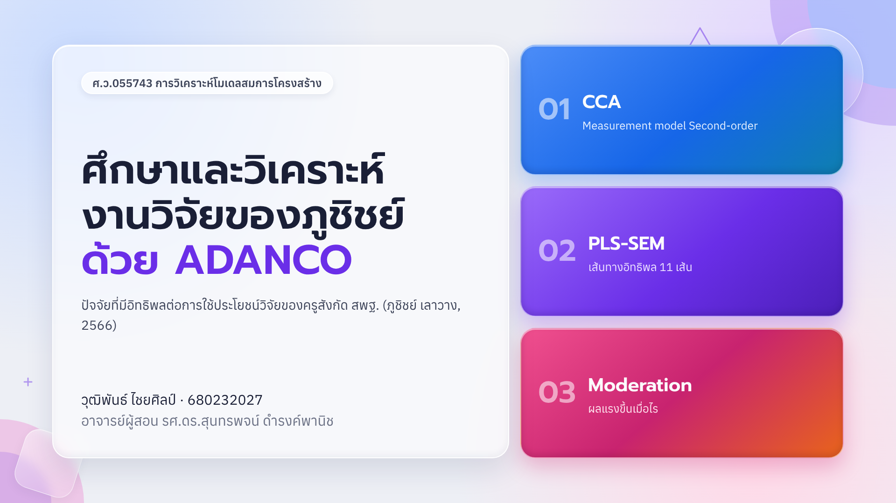
1. ปกเริ่ม 0.0s · ยาว 34.8s · เสียง 01
2. ตอนที่ 1 วัด RU ได้จริงไหมเริ่ม 34.2s · ยาว 29.5s · เสียง 02
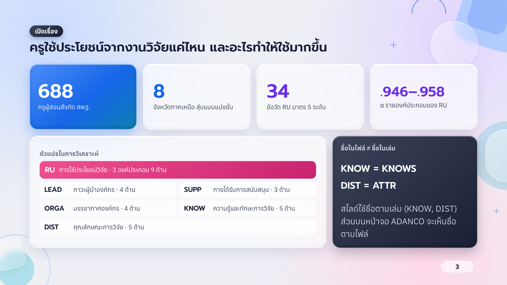
3. เปิดเรื่องเริ่ม 63.1s · ยาว 50.6s · เสียง 03
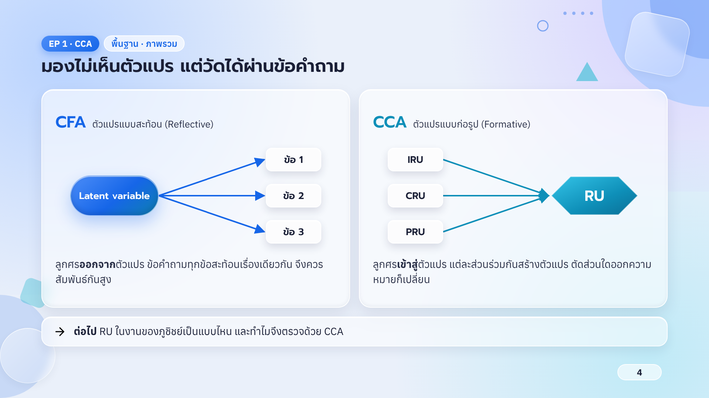
4. มองไม่เห็นตัวแปรเริ่ม 113.0s · ยาว 45.0s · เสียง 04
5. RU เกิดจากสามแบบรวมกันเริ่ม 157.4s · ยาว 53.2s · เสียง 05
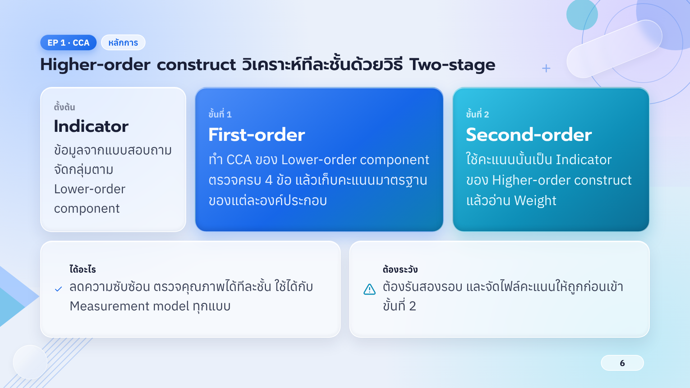
6. Two-stageเริ่ม 210.0s · ยาว 49.5s · เสียง 06
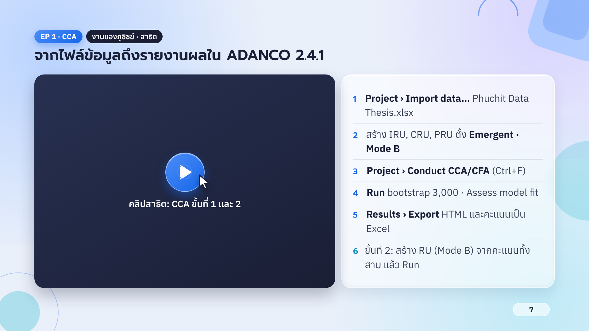
7. สาธิต ADANCO (คลิป)เริ่ม 258.9s · ยาว 185.0s · เสียง คลิป
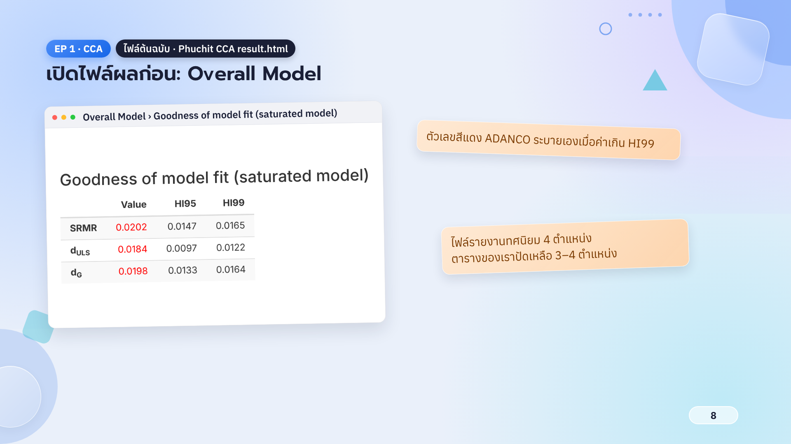
8. เปิดไฟล์ผล: Overall Modelเริ่ม 443.1s · ยาว 26.6s · เสียง 07
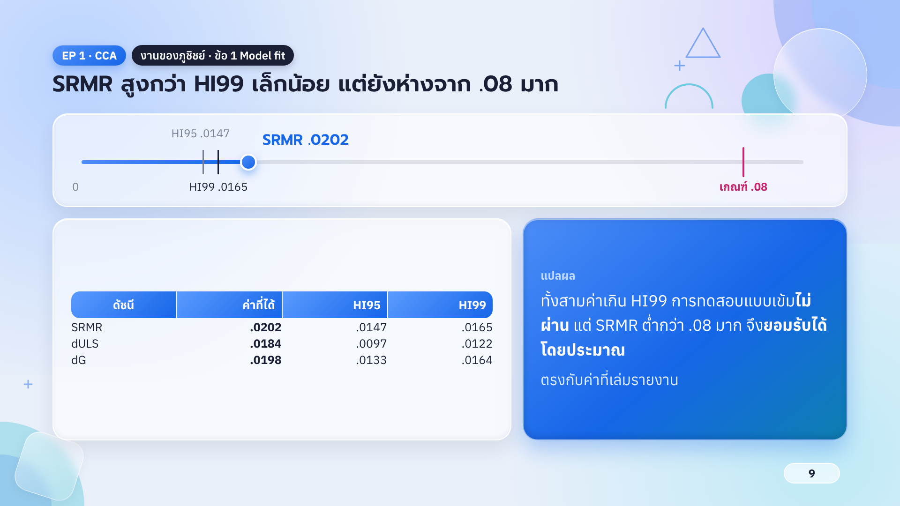
9. SRMR vs HI99เริ่ม 469.1s · ยาว 35.8s · เสียง 08
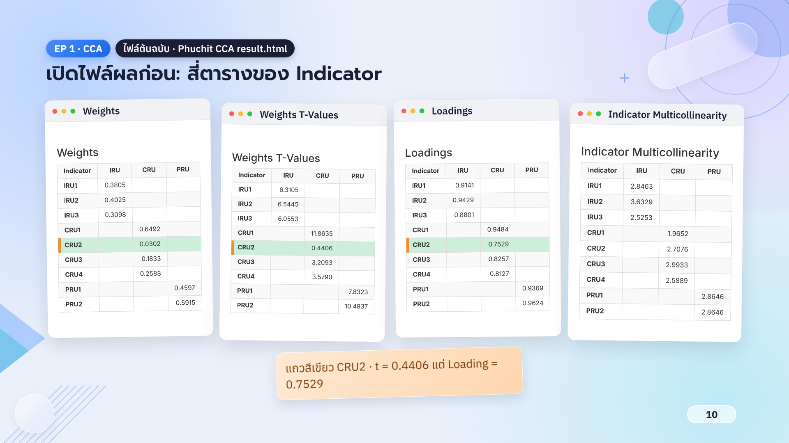
10. สี่ตารางของ Indicatorเริ่ม 504.3s · ยาว 27.0s · เสียง 09
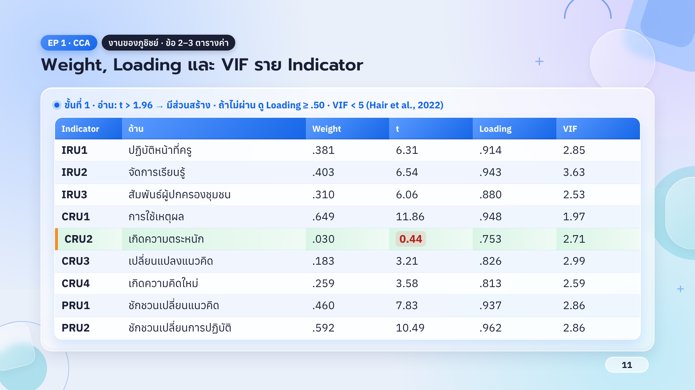
11. Weight / Loading / VIFเริ่ม 530.8s · ยาว 44.2s · เสียง 10
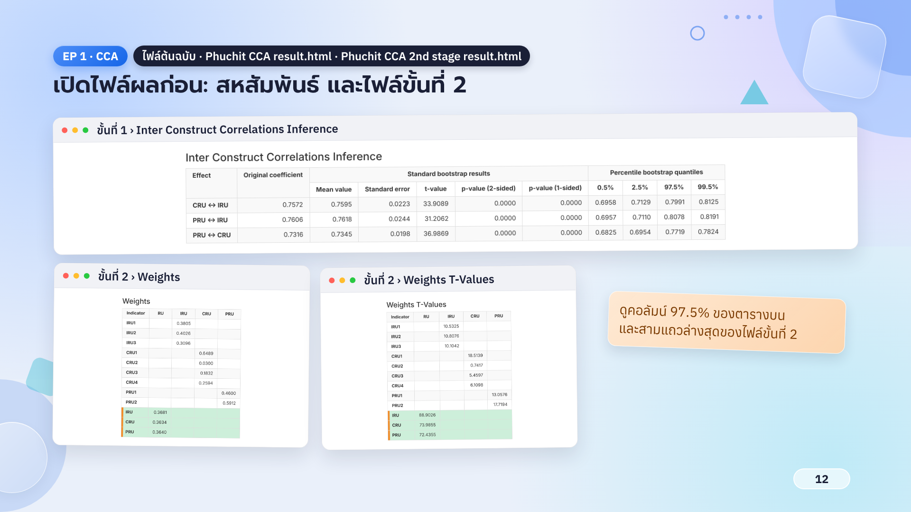
12. สหสัมพันธ์ + ไฟล์ขั้นที่ 2เริ่ม 574.4s · ยาว 23.6s · เสียง 11
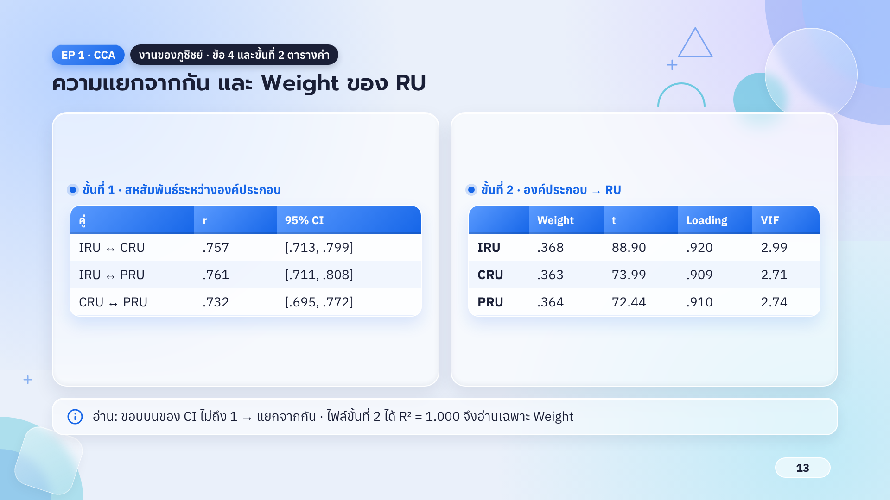
13. ความแยกจากกัน + Weight ของ RUเริ่ม 597.3s · ยาว 29.1s · เสียง 12
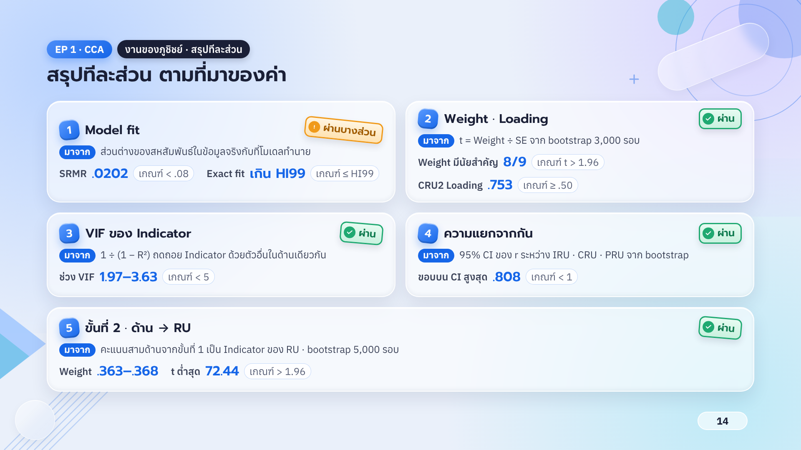
14. สรุปทีละส่วนเริ่ม 625.8s · ยาว 40.1s · เสียง 13
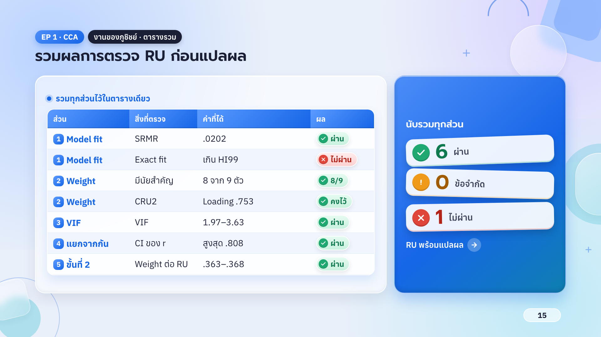
15. รวมผลการตรวจเริ่ม 665.3s · ยาว 19.1s · เสียง 14
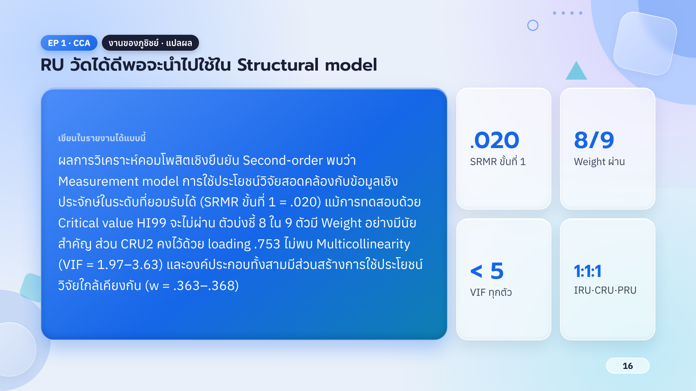
16. RU พร้อมใช้ใน Structural modelเริ่ม 683.8s · ยาว 41.0s · เสียง 15